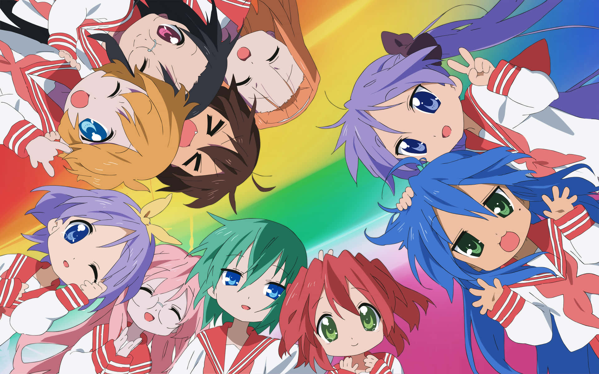
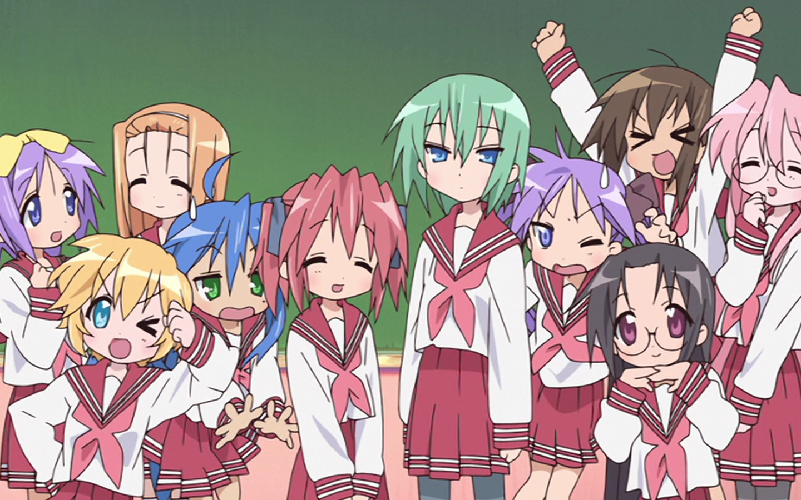
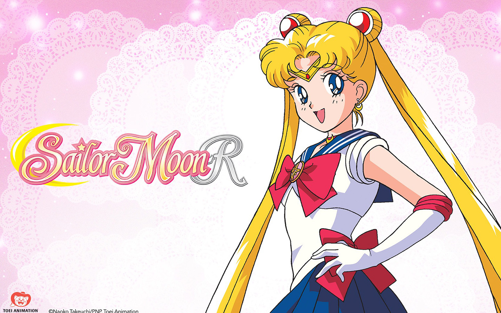
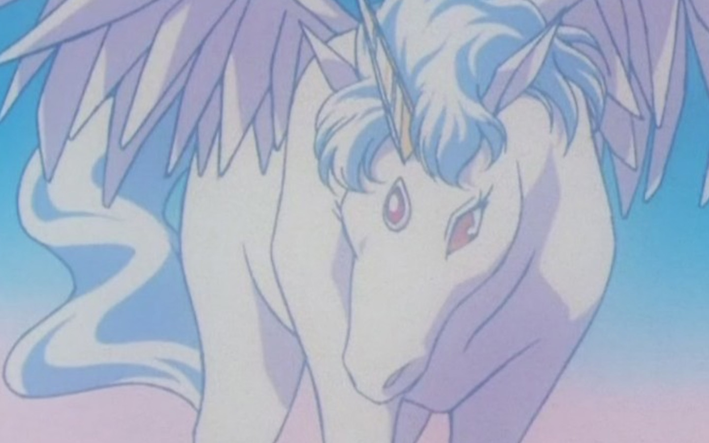
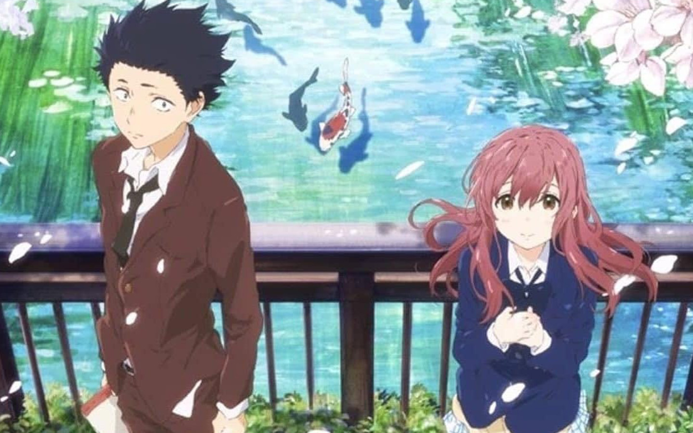

Anime Honorable Mentions: Screenshots And Opinions
Lucky Star!
 Sailor Moon R
 A Silent Voice

Lucky Star!
The story of "Lucky Star" revolves around the daily lives and experiences of a group of high school girls. The main character is Konata Izumi, an avid otaku (someone who is passionate about anime and manga) with a penchant for video games. Konata Izumi is one of the main characters in the anime and manga series "Lucky Star." She is the protagonist of the series and is known for her energetic personality, love for anime and video games, and her mischievous sense of humor. Konata stands out as an otaku, which refers to someone deeply passionate about anime, manga, and related subcultures. The series explores the everyday activities, conversations, and humor of Konata and her friends, including Kagami Hiiragi, Tsukasa Hiiragi, and Miyuki Takara.The anime is known for its comedic elements, pop culture references, and character interactions. It often features discussions and parodies related to anime, video games, and other aspects of otaku culture. While lacking a traditional plot structure, "Lucky Star" is celebrated for its light-hearted and humorous portrayal of the characters' ordinary lives. I used to watch this anime everyday after school years ago and I felt that i could relate to the main character alot. I like watching this when I'm cleaning or when im sick because of it being slow paced and the fact that the color pallete of the show has calm pastel colors.
Sailor Moon R
"Sailor Moon R" is the second season of the popular anime series "Sailor Moon." The story continues to follow Usagi Tsukino, who transforms into the magical warrior Sailor Moon along with her friends, the Sailor Guardians. The season introduces new characters and a new storyline. The main antagonist in "Sailor Moon R" is the Black Moon Clan, led by the mysterious Prince Demande and Wiseman. One notable addition in "Sailor Moon R" is the introduction of Chibiusa, a mysterious girl who claims to be Usagi and Mamoru's daughter from the future. Chibiusa plays a crucial role in the season's narrative and becomes an integral part of the Sailor Guardians' team. In "Sailor Moon R," also known as the "Sailor Moon R: The Movie" or "Sailor Moon R: Promise of the Rose," Pegasus is a prominent character. The movie is a feature film associated with the second season of the "Sailor Moon" anime.Pegasus, whose true name is Helios, is a mystical and winged horse that resides in the Golden Crystal. He serves as the guardian of the dreams of the people on Earth. Pegasus is also known for his connection to Chibiusa (Sailor Chibi Moon), who becomes the central character in the movie. The reason why I included Sailor Moon R is soley because of Pegasus and the memories I had with the show. Not much else to say as thats all there is to it...just nostalgia.
A Silent Voice
A Silent Voice is a story that revolves around a young boy named Shoya Ishida, who bullies a deaf girl named Shoko Nishimiya when they are in elementary school. Shoko transfers to another school due to the bullying, and Shoya becomes an outcast himself, experiencing the consequences of his actions. Over the years, Shoya becomes determined to make amends for what he did to Shoko.As the story unfolds, Shoya, now in high school, seeks to reconnect with Shoko and make things right. The film explores themes of redemption, forgiveness, and the impact of bullying on both the victim and the perpetrator. It delves into the complex emotions and challenges of communication, especially for someone like Shoko who is deaf. "A Silent Voice" is praised for its emotional depth, character development, and beautiful animation. It addresses sensitive topics such as bullying and disability with empathy and nuance. The movie received critical acclaim and won several awards for its powerful storytelling and emotional impact. It is often regarded as one of the standout anime films in recent years. Although this a movie and not a show, I had to put it on this list as it was beautiful to watch. If you really dont want to commit to a show but still intrested in watching anime, I highly reccomend this movie. I promise this movie is worth your while!